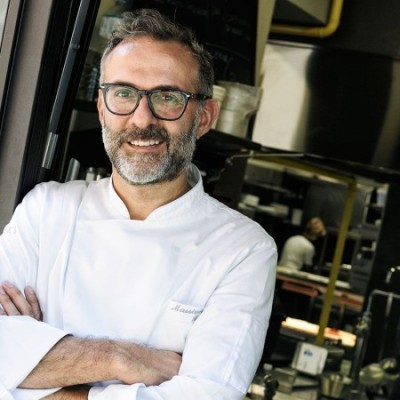
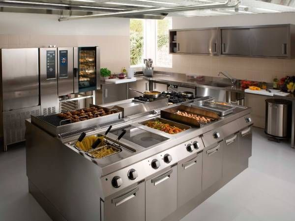

Massimo Bottura
Ceo, Fundador, Chef Ejecutivo
El reconocido Chef italiano Massimo Bottura, Nació y se crió en Módena, una pequeña ciudad al norte de Italia, dentro de la región de Emilia-Romagna. Las mujeres de su vida lo han influenciado profundamente, y de hecho Bottura afirma que su abuela es mucho mejor cocinera que él. Creció observándola a ella, a su madre y a su tía mientras cocinaban y de ahí surgió su propio amor por la comida.
Dueño y emprendedor de restaurants de 3 estrelas michelin alrededor del mundo. Su compromiso con MaiorDommo, es crear comida de alto nivel para todo tipo de hogares y ocasiones, comprobando yevaluando la calidad de cada uno de los integrates de la organizacion.
Elena Arzak
.png)
Directora de Alimentos y Bebidas
Elena Arzak es una prestigiosa cocinera española, hija del afamado chef Juan Mari Arzak. Sus profundas raíces relacionadas con el mundo de la gastronomía que se remontan a sus bisabuelos le hicieron que desde pequeña tuviera claro que su futuro estaba al lado de los fogones. Elena nació en San Sebastián en 1969. Estudió COU en el Colegio Alemán de San Sebastián.
Continuó su formación estudiando hostelería en una prestigiosa escuela de Suiza. Actualmente chef de Arzak reconocido restaurante basco a nivel mundial. Su compromiso con MaiorDommo es garantizar la creacion de menus balanceados y de alto nivel creativo, manteniendo los mas altos estandares de calidad.
Nuestra Casa
Nuestra Casa fundada en el año 2015, en la calle washington, es el lugar donde ha nacido cada idea y proyectos culinarios que hemos llevado a cabo con mucho esfuerzo y orgullo. Teniendo instalaciones y equipos del mas alto nivel, podemos generar productos del mas alto nivel, con los mas altos estadares de calidad, siempre cuidando nuestra premisa de tener los mejores sabores en cada una de las preparaciones para prepararnos y brindarte la mejor experiencia culinaria posible.
